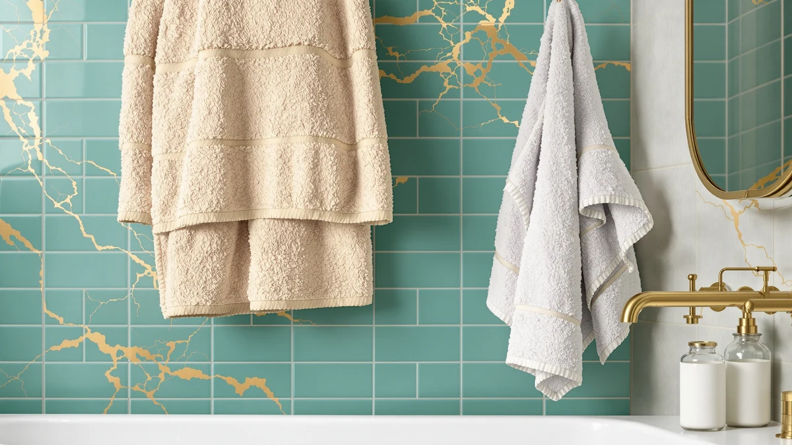

Modern Threads Bath Towel Set Bathroom Set Review (2026): Worth It?
Prices and picks verified as of November 2026. Independent, reader-supported reviews.


Quick Answer
The Modern Threads 6 Piece Bath Towel Set is the better pick if you want a full six-piece cotton set in a large size for $29.69, which undercuts all three Utopia Towels alternatives in this modern threads bath towel set bathroom set review by about thirty cents. Choose a Utopia Towels set instead if you specifically need a four-piece count or a medium towel size, since Modern Threads only ships in a six-piece, large-size configuration.
Our pick: Modern Threads 6 Piece Bath, $29.69 Check Price on Amazon
Bottom line: our top pick is the Modern Threads 6 Piece Bath Towel Set at $29.69.
Things to Know Before You Buy
- Modern Threads prices its 6 Piece Bath set at $29.69, about thirty cents less than each of the three Utopia Towels alternatives covered in this modern threads bath towel set bathroom set review.
- The Modern Threads set lists 100% cotton construction in a large size, per its current Amazon listing.
- Utopia Towels' 4 Pack Bath set trims the piece count to four, while its 6 Pack Medium set matches six pieces but in a medium size instead of large.
- None of the four listings compared here publish a star rating or review count at the time of writing, so treat any softness or durability claims as unverified until you check current reviews yourself.
- Price alone won't separate these four sets. Piece count and size do most of the work in deciding which one fits your bathroom.
This modern threads bath towel set bathroom set review compares the brand's six-piece cotton set against three Utopia Towels alternatives to see whether $29.69 buys you a better deal than the competition at $29.99. Modern Threads markets the set as a complete six-piece bundle in a large size, and that full-set positioning is the main thing separating it from Utopia's narrower four-piece and medium-size options.
Our take: the price gap between all four sets is small enough that it shouldn't be the deciding factor on its own. What matters more is piece count and size, since Modern Threads ships six large pieces for a few cents less than Utopia's options, while Utopia's 4 Pack Bath set and 6 Pack Medium set each trade size or count for a slightly different fit. The breakdown below covers what we found when comparing specs, pricing, and how each set stacks up against the others.
Why You Should Trust Us
Ilane Tall covers bath and home textiles for Best Bath Towels, focusing on how piece count, material, and price per set translate into practical bathroom decisions. We do not run a physical testing lab, and we don't claim to have used or installed any of the towel sets covered in this modern threads bath towel set bathroom set review. Instead, we research manufacturer listings, current Amazon pricing, and publicly available product specs, then compare those figures directly against similar sets on the market. Where a listing doesn't publish a rating or review count, as is the case for all four sets here, we say so rather than inventing one.
How We Compared
We built this review by comparing Modern Threads' published listing against the three competing Utopia Towels sets covered below. That means checking price, piece count, material, and size side by side instead of assigning a numeric score. For the Modern Threads set, we verified the $29.69 price, the 100% cotton material, and the large size against the current Amazon listing, then cross-checked those figures against Utopia's Luxurious Bath Towels, 4 Pack Bath, and 6 Pack Medium sets. None of the four listings publish a star rating or review count at the time of writing, so this comparison rests on specs and pricing rather than a crowd-sourced track record.
Overview & Specs

Modern Threads 6 Piece Bath
What we like
- Full six-piece set at a single price, rather than needing to buy pieces separately
- 100% cotton construction, confirmed on the current Amazon listing
- Large size across the set, rather than a mix of smaller towel sizes
- At $29.69, it's the least expensive of the four sets compared in this review
Flaws but not dealbreakers
- No public star rating or review count on the listing yet, so you're buying on the manufacturer's description alone
- The listing doesn't break down exactly which towel sizes make up the six pieces, so you can't confirm the mix before buying
- Utopia's 6 Pack Medium set is a close alternative if a medium size fits your bathroom better than large
| Material | 100% cotton |
| Size | Large |
In this modern threads bath towel set bathroom set review, the headline number is $29.69 for a complete six-piece cotton set. The current Amazon listing confirms 100% cotton construction and a large size across the set, which positions it as a straightforward, no-frills option rather than a specialty fiber blend or a certified hypoallergenic weave. For shoppers who just want a full set of matching cotton towels without comparing multiple fiber types, that simplicity is the appeal.
The listing doesn't publish a star rating or review count, so there isn't a crowd-sourced track record to weigh against the manufacturer's own description. It also doesn't specify exactly how the six pieces break down by towel type, which makes it harder to compare directly against Utopia's 4 Pack Bath set on a per-towel basis. At $29.69, Modern Threads undercuts all three Utopia Towels alternatives covered below, though the margin is thin enough that size and piece count should factor into your decision as much as price.
What We Liked
The clearest strength in this modern threads bath towel set bathroom set review is price relative to piece count. At $29.69, Modern Threads undercuts every Utopia Towels alternative covered here while still delivering a six-piece set in a large size. Confirmed 100% cotton construction also means you're not paying extra for an unproven fiber blend. For buyers who want a complete, no-frills cotton set without comparison-shopping multiple materials, that straightforward value is the set's biggest draw.
What Could Be Better
The biggest gap in the Modern Threads set is the missing star rating and review count, which leaves you without independent owner feedback to weigh against the manufacturer's description. The listing also doesn't specify how the six pieces break down by towel size, so you can't confirm the exact mix before buying. If a medium towel size would fit your bathroom better than large, Utopia's 6 Pack Medium set is a closer match on that single point, even at a slightly higher price.
Who Is It For?
The Modern Threads set makes the most sense for shoppers who want a complete six-piece cotton towel set at the lowest price among the four options in this modern threads bath towel set bathroom set review, and who don't need a specific towel size mix spelled out in advance. It's a reasonable match if large-size towels suit your bathroom and you're comparing on price and piece count rather than fiber specialty. It also fits anyone replacing a full bathroom's worth of towels at once, since buying a single six-piece set at $29.69 costs less than piecing together individual towels from separate listings. If you'd rather have a four-piece set instead of six, or a medium size instead of large, one of the Utopia Towels alternatives below fits that need better.
Alternatives to Consider
If the Modern Threads set isn't quite the right size or piece count for your bathroom, these three Utopia Towels sets cover the closest comparison points on price. All three sit within thirty cents of the Modern Threads price, and each trades size or piece count differently. None of them publish a star rating or review count either, so the choice between Modern Threads and Utopia still comes down to the specs listed in each set's name rather than independent owner feedback.

Premium Choice
Utopia Towels Luxurious Bath Towels
Priced at $29.99, thirty cents above Modern Threads, this Utopia Towels set is worth checking if you want to compare a second brand's cotton towel lineup before committing to a size or piece count.
$29.99
Check Price on Amazon
Premium Choice
Utopia Towels 4 Pack Bath
At $29.99, Utopia's 4 Pack Bath set covers four pieces instead of Modern Threads' six, a better fit if you want fewer towels at a nearly identical price.
$29.99
Check Price on Amazon
Premium Choice
Utopia Towels 6 Pack Medium
At $29.99, Utopia's 6 Pack Medium set matches Modern Threads on piece count but swaps the large size for medium, the better choice if medium towels suit your bathroom.
$29.99
Check Price on AmazonIs the Modern Threads 6 Piece Bath Towel Set a good value at $29.69?
It's priced competitively based on our research into current Amazon listings.
How does the Modern Threads set compare to the Utopia Towels alternatives?
The core difference comes down to piece count and size rather than price, since all four sets sit within thirty cents of each other.
Frequently Asked Questions
Is the Modern Threads 6 Piece Bath Towel Set a good value at $29.69?
How does the Modern Threads set compare to the Utopia Towels alternatives?
Who should skip the Modern Threads set and buy a Utopia Towels set instead?
Final Verdict
This modern threads bath towel set bathroom set review comes down to price against size and piece count. Modern Threads wins on price at $29.69 for a complete six-piece cotton set in a large size, undercutting all three Utopia Towels alternatives by about thirty cents. If large size and the lowest price matter most, Modern Threads is the pick to beat here. If you specifically want a four-piece count or a medium size instead, Utopia Towels' 4 Pack Bath and 6 Pack Medium sets each cover that swap for only a few cents more.